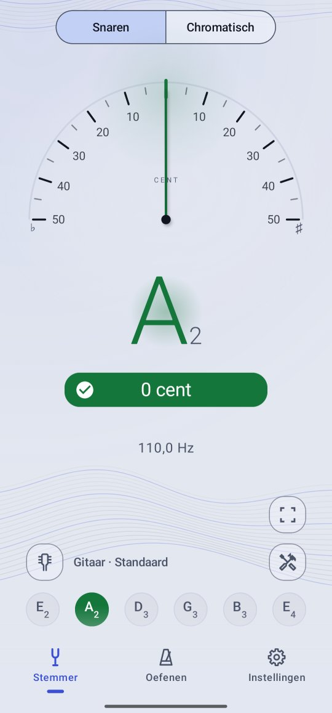
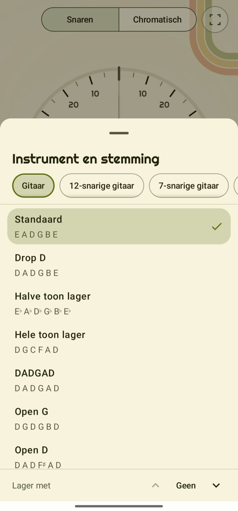
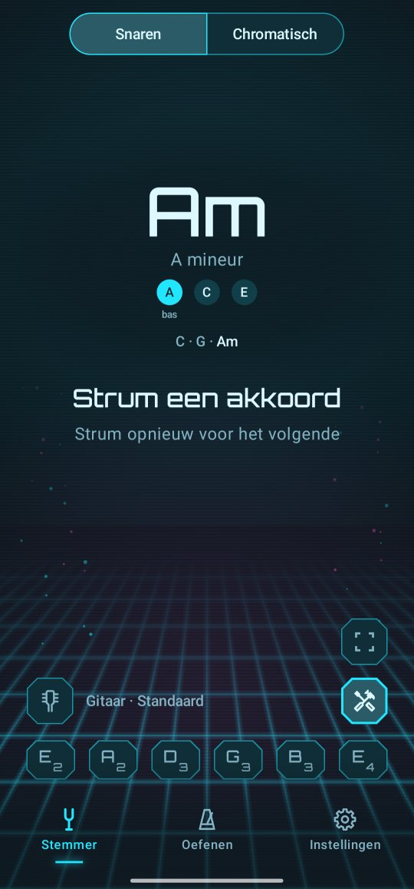
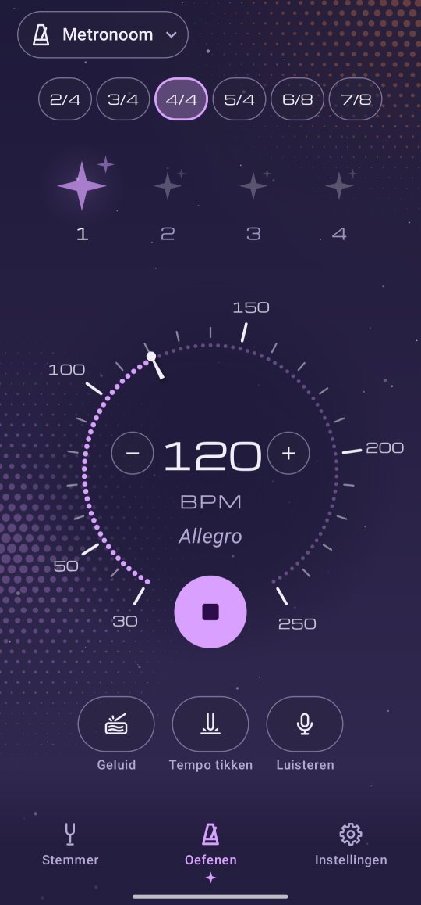

Een rustige, precieze stemmer. Gratis, zonder aanmelden.
Speel een snaar en Twangle laat zien welke noot het is en hoe ver die van zuiver zit, tot op de cent. Daarna helpt het je spelen: akkoordnamen, akkoordschema's, toonladders, de capo en een metronoom.

- Alles gratisGeen aankopen in de app, geen abonnement.
- Geen reclameNu niet en later ook niet.
- Geen accountOpenen en stemmen.
- Niets verlaat je telefoonTwangle heeft geen toestemming om internet te gebruiken.
Stem elk instrument
Gitaar (6, 7, 8 of 12 snaren), bas (4 of 5 snaren), ukelele, 5-snarige banjo, viool, altviool, cello en mandoline, in de gangbare stemmingen of je eigen. De chromatische stemmer doet elk ander instrument, of je stem. Alle instrumenten en stemmingen
Twangle werkt met TalkBack en met grote tekst, in 16 talen.
De functies
Stemmen
De stemmerSpeel een snaar en zie hoe ver die van zuiver zit.
StrumcheckSla alle snaren aan en zie welke niet goed staan.
12e-fretcheckOntdek of het zadel van een snaar moet verschuiven.
Meeluisteren
AkkoordnaamSla een akkoord aan en zie hoe het heet.
ToonlijnZie hoe stabiel een noot, een bend of je vibrato is.
Oefenen
MetronoomStrak de maat, van 30 tot 250 tellen per minuut.
AkkoordenAkkoordschema's voor je instrument en stemming.
ToonladdersElke noot op de hals, met een bourdon om over te spelen.
CapoKies de toonsoort van het nummer en zie waar de capo moet.
Instrumenten en meer
Instrumenten en stemmingenTwaalf instrumenten, lagere stemmingen, je eigen stemmingen.
LinkshandigAkkoordschema's en de hals bij Toonladders andersom.
De widgetJe stemming op het startscherm; één tik opent de stemmer.
Een kijkje binnen

Je instrument en stemming
Het akkoord dat je aanslaat, bij naam
Een metronoom die de maat houdt Akkoordschema's voor je stemming
Akkoordschema's voor je stemming